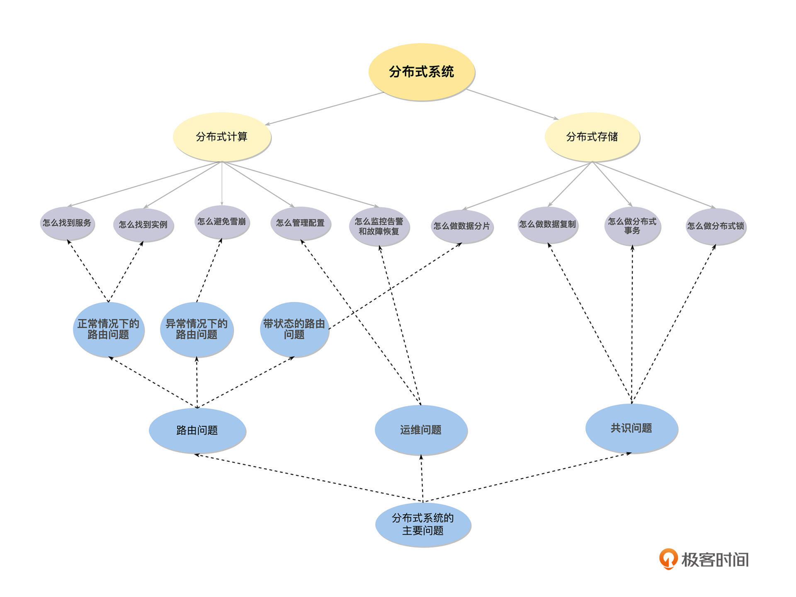
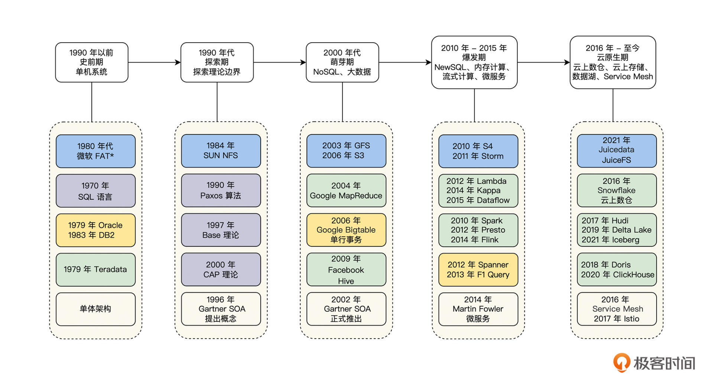
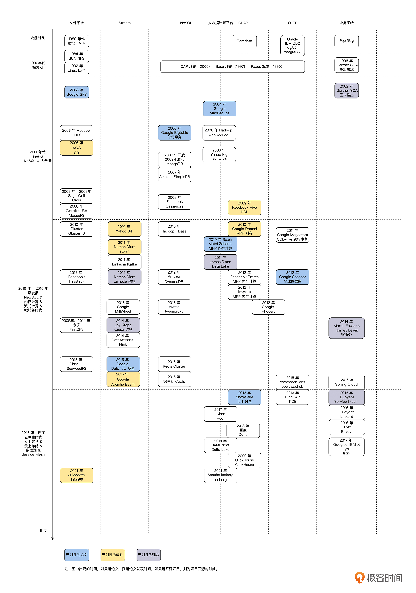
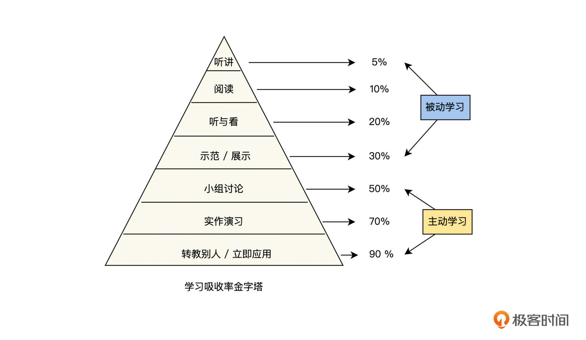

- 00 开篇词 掌握好学习路径，分布式系统原来如此简单.md
- 01 导读：以前因后果为脉络，串起网状知识体系.md
- 02 新的挑战：分布式系统是银弹吗？我看未必！.md
- 03 CAP 理论：分布式场景下我们真的只能三选二吗？.md
- 04 注册发现： AP 系统和 CP 系统哪个更合适？.md
- 05 负载均衡：从状态的角度重新思考负载均衡.md
- 06 配置中心：如何确保配置的强一致性呢？.md
- 07 分布式锁：所有的分布式锁都是错误的？.md
- 08 重试幂等：让程序 Exactly-once 很难吗？.md
- 09 雪崩（一）：熔断，让故障自适应地恢复.md
- 10 雪崩（二）：限流，抛弃超过设计容量的请求.md
- 11 雪崩（三）：降级，无奈的丢车保帅之举.md
- 12 雪崩（四）：扩容，没有用钱解决不了的问题.md
- 13 可观测性（一）：如何监控一个复杂的分布式系统？.md
- 14 可观测性（二）：如何设计一个高效的告警系统？.md
- 15 故障（一）：预案管理竟然能让被动故障自动恢复？.md
- 16 故障（二）：变更管理，解决主动故障的高效思维方式.md
- 17 分片（一）：如何选择最适合的水平分片方式？.md
- 18 分片（二）：垂直分片和混合分片的 trade-off.md
- 19 复制（一）：主从复制从副本的数据可以读吗？.md
- 20 复制（二）：多主复制的多主副本同时修改了怎么办？.md
- 21 复制（三）：最早的数据复制方式竟然是无主复制？.md
- 22 事务（一）：一致性，事务的集大成者.md
- 23 事务（二）：原子性，对应用层提供的完美抽象.md
- 24 事务（三）：隔离性，正确与性能之间权衡的艺术.md
- 25 事务（四）：持久性，吃一碗粉就付一碗粉的钱.md
- 26 一致性与共识（一）：数据一致性都有哪些级别？.md
- 27 一致性与共识（二）：它们是鸡生蛋还是蛋生鸡？.md
- 28 一致性与共识（三）：共识与事务之间道不明的关系.md
- 29 分布式计算技术的发展史：从单进程服务到 Service Mesh.md
- 30 分布式存储技术的发展史：从 ACID 到 NewSQL.md
- 春节加餐 技术债如房贷，是否借贷怎样取舍？.md
- 春节加餐 深入聊一聊计算机系统的时间.md
- 春节加餐 系统性思维，高效学习和工作的利器.md
- 结束语 在分布式技术的大潮流中自由冲浪吧！.md
结束语 在分布式技术的大潮流中自由冲浪吧！
你好，我是陈现麟。
时间一晃三个月就过了，经过这一段时间的学习，你对分布式系统一定有了自己的知识体系和认识，如果现在让你回答一个问题：分布式系统是简单还是复杂呢？你的脑海里可能会出现两种矛盾的声音，无法给出确定的答案。其实出现这个情况是非常正常的，有了专栏的知识积淀，我们是时候重新认识一下分布式系统了。
重新认识分布式系统
分布式系统其实很简单和分布式系统其实很复杂，这两个回答没有对错之分，它们是基于宏观和细节角度的不同思考。
在这个专栏里，我们将分布式技术的知识体系做了一个全面的讨论和梳理，下面我们从简单和复杂这两个不同角度，带你跳出知识体系，对分布式系统有一个全新的理解。
分布式系统其实很简单
分布式系统简单来说就是一句话，由多个计算机节点通过网络组成一个系统，对它的使用者来说和单机系统一样。通过网络组成一个系统是非常简单的事情，而让使用者以为是一个单机系统，则需要解决多个计算机节点内部协调的问题。这些问题在本专栏中，我们都一一讨论过了，具体见下图。

同时，如果我们从分布式系统演进历史的角度来看，分布式系统的发展历史差不多为 30 年，可以简单梳理为史前期、探索期、萌芽期、爆发期和云原生期这 5 个历史阶段。史前期为单机时代，探索期主要是理论边界的思考，萌芽期诞生了第一代分布式系统，爆发期则开始快速发展和不断突破，现在我们处于云原生期，一个新的发展方向是利用云的能力来架构分布式系统，具体见下图。

从上面的讨论中，我们可以看到理解分布式系统是有迹可循的，它解决的问题和演进的历史都简单清晰，很好理解和掌握，所以从宏观的知识角度出发，我们认为分布式系统其实很简单。
分布式系统其实很复杂
但是，分布式系统又是非常广泛的一个概念，它包含了非常多的领域，并且每一个领域都有它特别的领域问题和解决方案。下面我将其分为 6 个领域，分别为分布式文件系统、Stream、NoSQL、OLAP、OLTP 和业务系统，每一个领域都在快速发展中，并且出现了非常不错的进展。这里我进行了简单的梳理，具体见下图。

从上面的图中，我们看到了非常多的分布式系统，它们组成了一个非常复杂的概览图。其实这里的分布式系统只是冰山一角，还有非常多的分布式系统没有被收录进来。所以，分布式系统其实是非常复杂的一个体系。
总体来说，我认为这个问题如同“在战略上藐视敌人，在战术上重视敌人”一样，在宏观层面，分布式系统是简单的，但是在细节上，分布式系统又是复杂的。不过从宏观层面掌握了分布式系统，我们就不会害怕复杂的细节实现了。
开始自由冲浪吧
通过这个专栏的学习，你已经建立好分布式系统的知识体系，这就好比你已经学会了冲浪的技能，整个“分布式技术的大海”向你敞开了怀抱，现在你可以去自由冲浪了，这就达到了本专栏的目标。
在你自由冲浪之前，我还想和你分享一下我在学习方面的一些经验，将这些经验作为本专栏最后的一次谈心，也作为朋友之间的临别赠言，希望能为你今后的学习保驾护航。
时间都去哪儿了
我曾经有一段时间，被一个问题困扰：每天我都花很多的时间学习和阅读，通过手机、平板、电脑和书籍等渠道输入了很多的信息，但是回想起来又感觉没有学习到什么，很疑惑这些学习的时间都去哪儿了？
有上进心并且爱学习的你，是不是也有这方面的困扰呢？下面我来分享一下我是如何解决这个问题的，希望这些方法可以让你的自由冲浪之旅更加快乐。
被动学习 vs 主动学习
首先我们来思考下学习方式的问题。我们的学习方式可以分为两类，一类是主动学习，另一类是被动学习，每一种学习方式都有不同的学习效率，下图是美国国家训练实验室研究的结果，研究了不同学习方式的平均学习效率。

结合上面的图，你是不是很快就发现了问题，我们平时将大量的时间都投入到了被动学习中，所以学习效率是很低的，而改变自己的学习习惯，通过主动学习来提高学习效率是非常有效的。
就拿我的经历来说吧，当我发现我花在学习上的时间很多，但是吸收的效果不好，并且记不住也答不出的时候，我就意识到被动学习的效率太低了。然后我就开始有意识地采用做笔记、写博客和做分享的方式去学习，将被动学习转变为主动学习，学习效率和质量都有了非常大的提高。
看完我的学习经历，你可能会联想到费曼学习法，它其实也是一样的思路，通过自己学习，然后将学习结果教给完全不懂的人，将被动学习转变为主动学习。
泛读学习 vs 精读学习
另一个问题是学习精力投入的问题。我们平时进行的大量学习其实都是泛读的方式，但是通过这个方式只是获取了信息，并没有把它变成我们所掌握的知识，这样很容易就会出现学完就忘记的情况，而精读则是聚焦于某一个知识点、某一篇论文或某一本书上，集中大量的时间来 Close 一个问题，这种方式可以让我们把获取的信息变成自己掌握的知识或能力。
记得刚刚开始学习计算机网络的时候，我在网络上看了各种各样的资料，也花了一些时间来总结，但是总感觉自己对于网络的体系化认识是非常不足的。不过，在这些泛读中，我发现有很多的资源，都会提到KevinR.Fall 和 W.RichardStevens 写的书籍《TCP/IP详解》，我在试读后感觉非常不错，于是立即花了几天时间，精读了这本书，从此我对计算机网络基础方面的理解可以说是上了一个台阶。对于当时的我来说，相当于 Close 掉计算机网络这个知识领域了。
所以，通过泛读确定精读的目标和内容，然后去精读是一个让我受益匪浅的学习方式，并且在精读的时候，我们还可以采用主动学习的方式或者费曼学习法，使学习效率提高，让效果更持久。
以上这些就是我的学习经验分享，可能这些分享并不是最新潮的，但却是实实在在帮助到我的，希望你也能将这些方法实践起来。
最后，送君千里，终须一别，你已经面朝分布式技术的大海，迎来了春暖花开的季节，现在就带上主动学习和精读学习的习惯，开启你自由冲浪的生活吧！同时，我也要告诉你温故知新非常重要，在后续的复习过程中，你依然可以在留言区提问，我依然会跟你保持交流。
为了让专栏的内容越来越好，我准备了一份结课问卷，希望你能用两分钟的时间填写一下，非常期待你对这个专栏的意见或建议，众人拾柴火焰高，专栏质量的提升离不开你的努力！
© 2019 - 2023 Liangliang Lee. Powered by gin and hexo-theme-book.